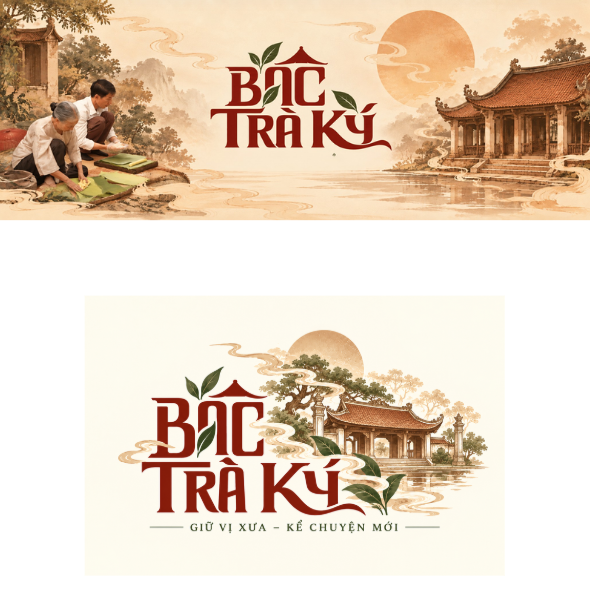
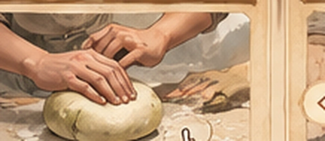

Giang Xá là nơi lưu giữ mạnh mẽ ký ức văn hóa về Lý Nam Đế qua cụm di tích, lễ hội và truyền thống địa phương. Một số chi tiết gắn với thời niên thiếu nên được đọc như ký ức văn hóa địa phương, không nên coi là dữ kiện độc lập tuyệt đối.
Tạp chí Thế giới Di sản (2016) ↗
BÁC TRÀ KÝ • MICROSITE TƯƠNG TÁC
MỞ BÁNH —
MỞ BÁNH —
MỞ CHUYỆN
Từ một vùng đất mang dấu xưa của Giang Xá, mở ra câu chuyện về Lý Nam Đế, rồi trở về căn bếp với chiếc Bánh Bác mang vị ký ức.
Đây là một trải nghiệm tương tác gồm 2 hành trình chính: một hành trình giải đố kể chuyện theo cảm hứng lịch sử – văn hóa Giang Xá, và một hành trình thao tác làm Bánh Bác để cuối cùng dâng bánh lên vua. Phần lịch sử được chú giải nguồn rõ ràng; phần game và lời thoại hư cấu được ghi chú tách biệt.
02hành trình chơi
04+nguồn tư liệu
100%thiết kế theo màu BTK
Lưu ý: tranh minh họa, cơ chế game, lời thoại và các câu đố là phần sáng tạo của nhóm. Các chi tiết lịch sử được đối chiếu bằng nguồn chính thống và ghi ở mục Tư liệu.
KHÔNG GIAN THƯƠNG HIỆU

CHẤT LIỆU
Tranh cổ
& cuộn sớ
& cuộn sớ
GAMEPLAY
Giải đố
& thao tác
& thao tác
CẢM HỨNG
Giang Xá – Lý Nam Đế – Bánh Bác
CHƯƠNG 01 / 04
Bí mật Linh Bảo
TRUYỆN TƯƠNG TÁC
Hành trình này không đi theo kiểu trắc nghiệm. Bạn quan sát tranh, tương tác với vật thể, ghép mảnh, xoay đường và mở từng lớp chuyện để theo bước Lý Nam Đế qua ký ức văn hóa Giang Xá.
GIANG XÁ • HÌNH MINH HỌA
LÝ BÍ · LỜI THOẠI HƯ CẤU
Từng mảnh ký ức của làng đều mang một dấu hiệu. Tìm đủ ba tín vật trước khi mở cửa.
GIAN BẾP • CHẶNG 1/4
THỬ TÀI LÀM BÁNH BÁC
GAME THAO TÁC
Bạn không chỉ đọc hay chọn đáp án. Hãy thật sự thao tác: kéo thả hình nguyên liệu, giữ nhiệt để “bác” bột, xếp lớp, cuộn bánh rồi dâng lên vua. Nếu làm sai, bạn vẫn có thể hoàn thành — nhưng sẽ bị chê khi trình bánh.

MÂM NGUYÊN LIỆU
LỜI NGƯỜI DẪN CHUYỆN
Muốn có chiếc Bánh Bác dẻo ngon, trước hết hãy nhớ nguyên liệu truyền thống. Bạn sẽ kéo thả hình nguyên liệu, giữ nhiệt, xếp lớp, cuộn bánh và mang thành phẩm đi dâng vua.
01 • Kéo ảnh nguyên liệu vào giỏ
TƯ LIỆU & PHƯƠNG PHÁP
Giang Xá – dấu ấn Lý Nam Đế
Khởi nghĩa năm 542 và nước Vạn Xuân
Hoài Đức và lễ hội Giang Xá
Bánh Bác và truyền thuyết dâng vua
Lịch sử có nguồn, hư cấu có ranh giới
Microsite này được xây theo hướng kể chuyện có chú thích nguồn. Điều đó nghĩa là: mốc sự kiện, địa danh và những thông tin có thể kiểm chứng sẽ dẫn về nguồn; còn tranh minh họa, lời thoại, tín vật, thử thách, ngự điện và phần vua trực tiếp nếm bánh là hư cấu gameplay.
Lý Bí lãnh đạo khởi nghĩa chống nhà Lương năm 542; đến năm 544 xưng đế, lập nước Vạn Xuân. Đây là khung lịch sử cốt lõi được dùng cho phần dẫn chuyện.
Bảo tàng Lịch sử Quốc gia (2014) ↗Những bài viết của cơ quan văn hóa Hà Nội và Hoài Đức giúp bổ sung bối cảnh hiện nay của di tích, lễ hội và vai trò ký ức cộng đồng quanh Lý Nam Đế.
Sở Văn hóa & Thể thao Hà Nội (2024) ↗Bài báo của Quân đội nhân dân ghi lời người thợ địa phương về nguyên liệu, kỹ thuật “bác” bột và câu chuyện bánh tiến vua. Phần vua nếm bánh trong game là tình huống sáng tạo dựa trên lời kể này.
Báo Quân đội nhân dân (2025) ↗Nếu nhóm muốn phát triển thành sản phẩm dùng công khai, nên tiếp tục bổ sung chú thích, thuyết minh nguồn và phân biệt rõ hơn giữa sử liệu – truyền thuyết – sáng tạo thương hiệu.